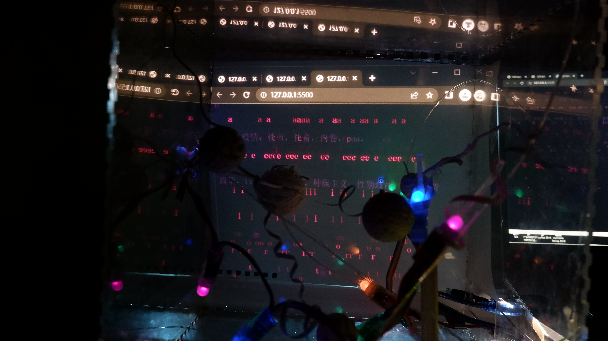
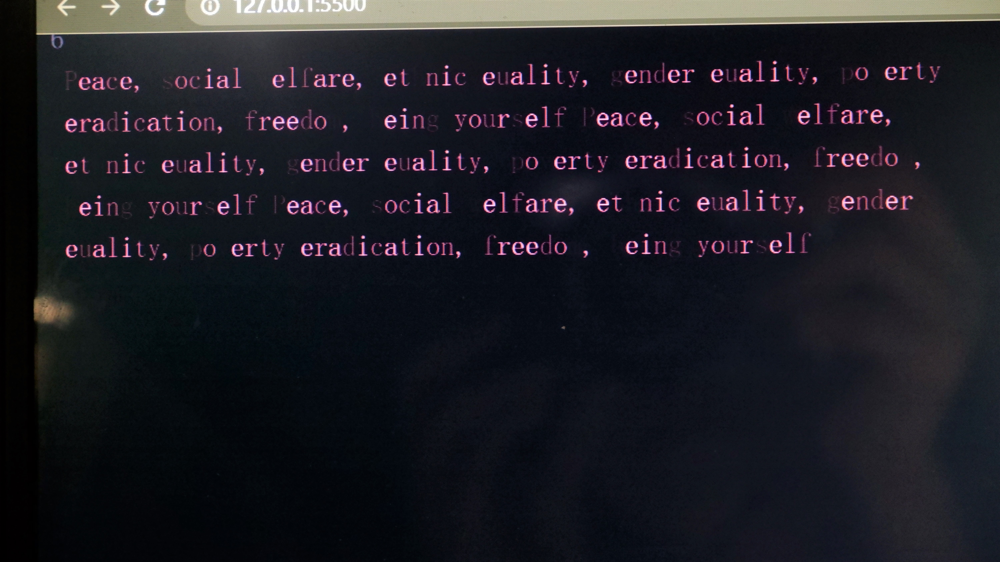

Vimeo Video
Video from this Light of Darkness
Images
 I have used sound sensors to interact with colored lights and p5js.
A little light coming together has the power to break through the darkness.
This interaction is used to express the phenomenon of antagonism when voicing opposition on the internet. And through this device I explore the balance of opposition.
Video from this Light of Darkness
I have used sound sensors to interact with colored lights and p5js.